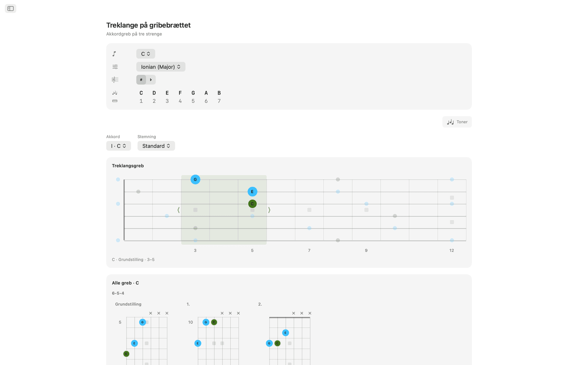
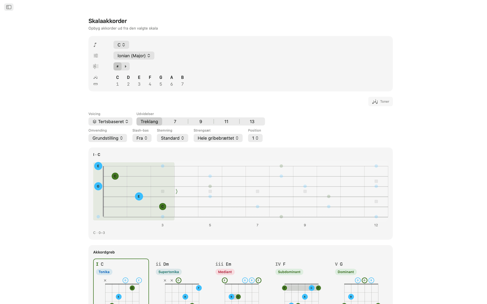
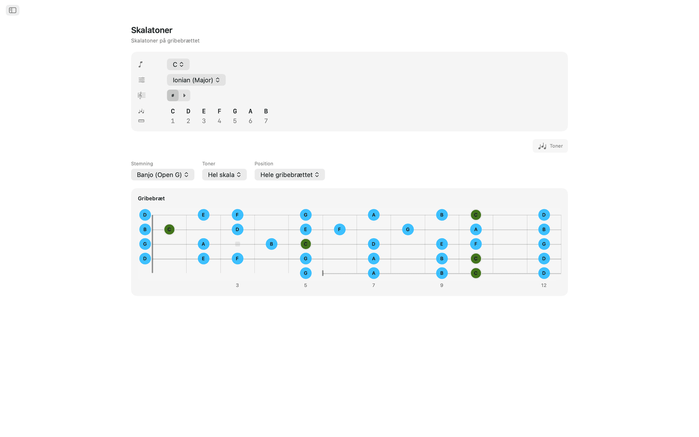
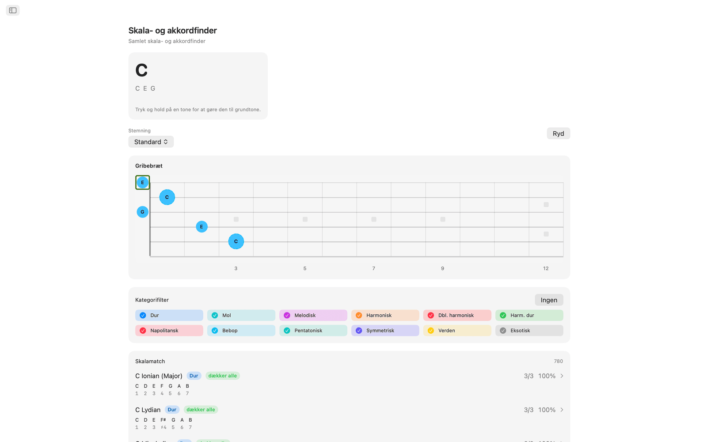
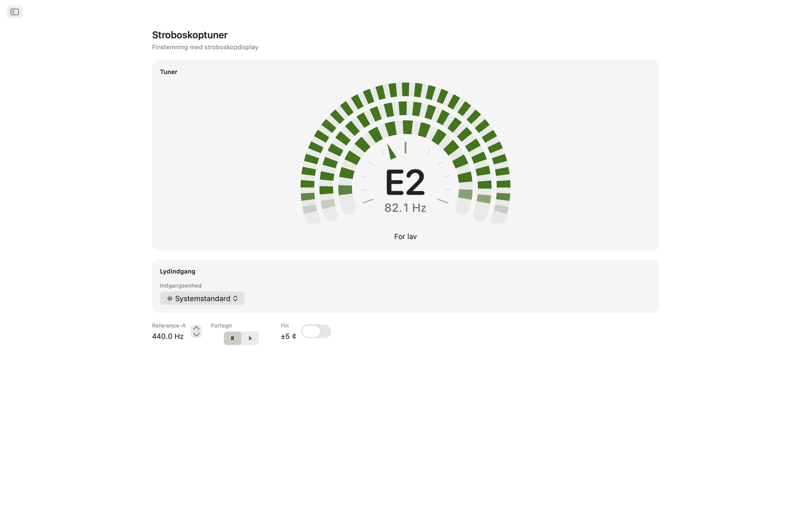
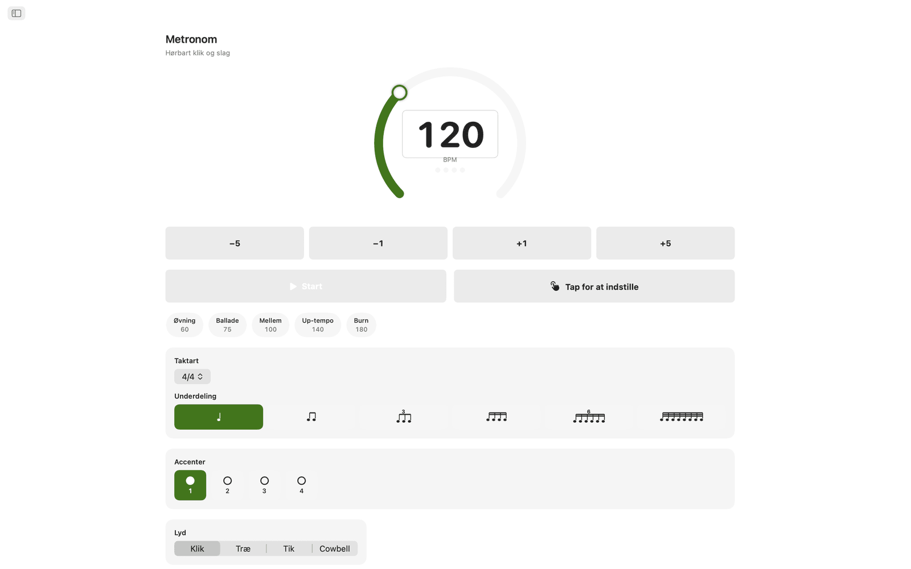
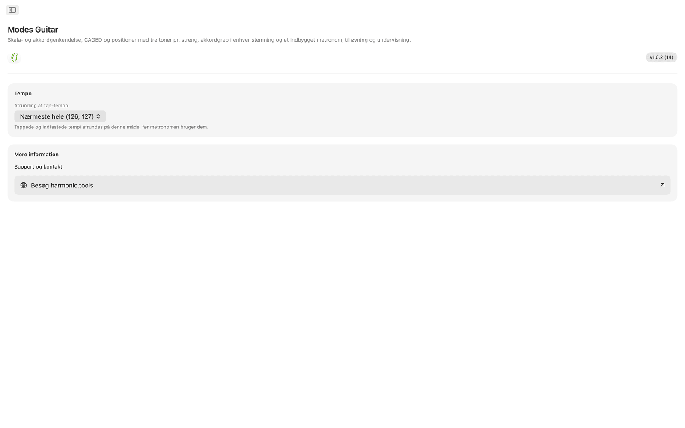

Modes Guitar til macOS
Modes Guitar er en gribebrætapp til Mac. Klik på de toner, du griber, for at finde ud af, hvad du spiller, læg enhver skala ud i CAGED- eller tre-toner-pr.-streng-positioner, find spillebare akkordgreb i enhver stemning, og øv til et indbygget metronom. Det er en app med indholdsoversigt, så den kan stå ved siden af din DAW eller din undervisningsplan.
- Skala- og akkordfinder direkte på halsen
- CAGED- og tre-toner-pr.-streng-positioner
- Spillebare akkordgreb i enhver stemning
- 20 stemninger plus din egen stemning
- Stroboskoptuner med valg af audiointerface og kanal
- Øvemetronom og widgets i Meddelelsescenter
Skærmbilleder
Med lyse og mørke skærmbilleder, der følger webstedets tema.









Funktioner
- Klik på halsen på de toner, du holder nede, så navngiver Modes Guitar akkorden i realtid (dur, mol, formindsket, forstørret, udvidede, suspenderede og flere) og rangerer alle skalaer, der passer, efter hvor mange af tonerne de dækker. Filtrér efter skalafamilie for at indsnævre listen, og hop derefter direkte til skalaens akkorder.
- Vælg en grundtone og en skala, så lyser alle skalaens toner op over halsen. Skift til CAGED-positioner eller løb med tre toner pr. streng, træk en boks op og ned ad halsen for at skifte position, og indsnævr tonerne til treklangen, septimakkorden, pentatonikken eller hele skalaen.
- Hvert trin i skalaen får spillebare akkordgreb med markeringer for åbne og dæmpede strenge, barré-indikatorer og en kolonne med båndnumre, når grebet sidder højere oppe på halsen. Gå gennem positionerne langs halsen, vælg en omvending, eller tving en hvilken som helst skalatone ned i bassen til slash-akkorder.
- Enhver akkord i tonearten kan skilles ad og sættes sammen igen på halsen. Alle tætte voicinger vises som et gitter af diagrammer, grupperet efter strengsæt, i grundstilling, første omvending og anden omvending. Vælg en, så vises den på gribebrættet med de øvrige akkordtoner omkring sig, og du kan trække grebet op ad halsen for at spille det samme greb i alle positioner.
- Der er 20 stemninger: Standard, Drop D, Drop C, E♭-standard, DADGAD, Open G, Open D, 7-strenget, baryton, 4- og 5-strenget bas, ukulele, banjo (femstrenget, tenor og plektrum) og mandolin. Greb, positioner og tonenavne genberegnes for den stemning, du vælger, og når du omstemmer, beholder du din fingersætning, så du kan høre, hvad det samme greb bliver til. Til en egen stemning vælger du 3 til 8 strenge og stemmer hver enkelt efter gehør, med udgangspunkt i en vilkårlig forudindstilling.
- Tuneren er stroboskopisk. Spil en streng, og tre ringe af segmenter driver den ene vej, når du er for lav, og den anden vej, når du er for høj, og står stille i det øjeblik, du rammer tonen, hvilket viser langt finere forskelle, end en nål kan. Den er fuldt kromatisk, så den navngiver alt, hvad du spiller, åben streng eller grebet tone, i enhver stemning, og guitar, bas, ukulele, banjo eller mandolin stemmes fra den samme skive. Du kan indstille kammertonen a hvor som helst fra 415 til 466 Hz, slå Finskala til for at aflæse til en tiendedel cent og vise fortegn som kryds eller b. På Mac vælger du også, hvilket audiointerface og hvilken indgangskanal den lytter på, så en guitar, der er sluttet til et interface, stemmes direkte fra stikket. Alt analyseres på enheden, og intet optages.
- Øvemetronomet har taktarter, underdelinger, swing, accenter på hvert slag, fire klikstemmer, justerbar lydstyrke og haptik samt hurtige tempi og gemte forudindstillinger til de passager, du øver.
- Hav metronomen i Meddelelsescenter, og start eller stop den uden at skifte app. Der er også en Dagens skala og en Dagens akkord at arbejde med.
På Mac
- Kører helt på enheden: ingen konto, ingen reklamer, ingen sporing
- Ingen internetforbindelse nødvendig
- Lyst og mørkt udseende overalt
- En app med indholdsoversigt, der står ved siden af din DAW eller din undervisningsplan
- Oversat til 22 sprog
Tilgængelighed
Fungerer med VoiceOver og Stemmestyring og kan bruges fra tastaturet med piletasterne og mellemrumstasten.
Modes Guitar er gratis at prøve i 7 dage. Efter prøveperioden er fuld adgang et engangskøb uden abonnement.
Opslag til gribebræt og stemninger
Opslag til appens stemninger, positioner, akkordværktøjer, tuner og metronomfunktioner.
Stemninger
Greb, positioner og tonenavne genberegnes for den stemning, du vælger. Når du omstemmer, beholder du din fingersætning, så du kan høre, hvad det samme greb bliver til. Tonerne er angivet fra den dybeste til den højeste streng.
| Stemning | Toner (dyb → høj) | Strenge |
|---|---|---|
| Standard | E A D G B E | 6 |
| Drop D | D A D G B E | 6 |
| Drop C | C G C F A D | 6 |
| E♭-standard | E♭ A♭ D♭ G♭ B♭ E♭ | 6 |
| DADGAD | D A D G A D | 6 |
| Open G | D G D G B D | 6 |
| Open D | D A D F♯ A D | 6 |
| 7-strenget | B E A D G B E | 7 |
| Baryton | B E A D F♯ B | 6 |
| Bas (4-strenget) | E A D G | 4 |
| Bas (5-strenget) | B E A D G | 5 |
| Ukulele | G C E A | 4 |
| Banjo (Open G) | G D G B D | 5 |
| Banjo (Double C) | G C G C D | 5 |
| Banjo (Sawmill) | G D G C D | 5 |
| Banjo (Open D) | F♯ D F♯ A D | 5 |
| Banjo (tenor) | C G D A | 4 |
| Banjo (irsk tenor) | G D A E | 4 |
| Banjo (plektrum) | C G B D | 4 |
| Mandolin | G D A E | 4 |
Du kan også bygge din egen stemning: vælg 3 til 8 strenge, og stem hver enkelt efter gehør, med udgangspunkt i en vilkårlig forudindstilling.
Positioner på gribebrættet
Læg enhver skala ud over halsen, og vælg, hvor meget af den du vil se. Træk en boks op og ned ad halsen for at skifte position.
Positionssystemer
Tonedelmængder
Akkordgreb
Hvert trin i skalaen får spillebare greb i den aktuelle stemning.
- Spillebare greb har markeringer for åbne og dæmpede strenge, barré-indikatorer og en kolonne med båndnumre, når grebet sidder højere oppe på halsen.
- Du kan gå gennem grebene langs halsen.
- Omvendinger lader dig vælge, hvilken akkordtone der ligger i bassen.
- Til slash-akkorder kan du tvinge en hvilken som helst skalatone ned i bassen.
Treklange på halsen
Tag en hvilken som helst akkord i tonearten fra hinanden, og sæt den sammen igen på halsen.
Stroboskoptuner
En stroboskoptuner til ethvert instrument i enhver stemning. Analyseres på enheden og optages aldrig.
Øvemetronom
Et komplet metronom til de passager, du øver.
Widgets
Kom til metronomen, Dagens skala og Dagens akkord uden at skifte app.